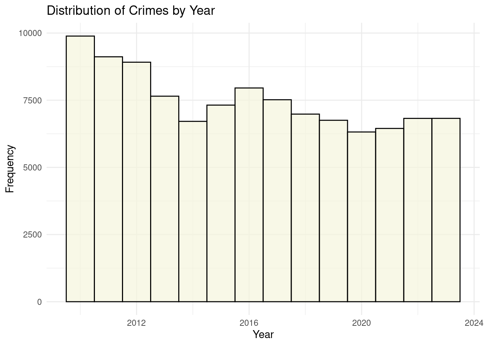
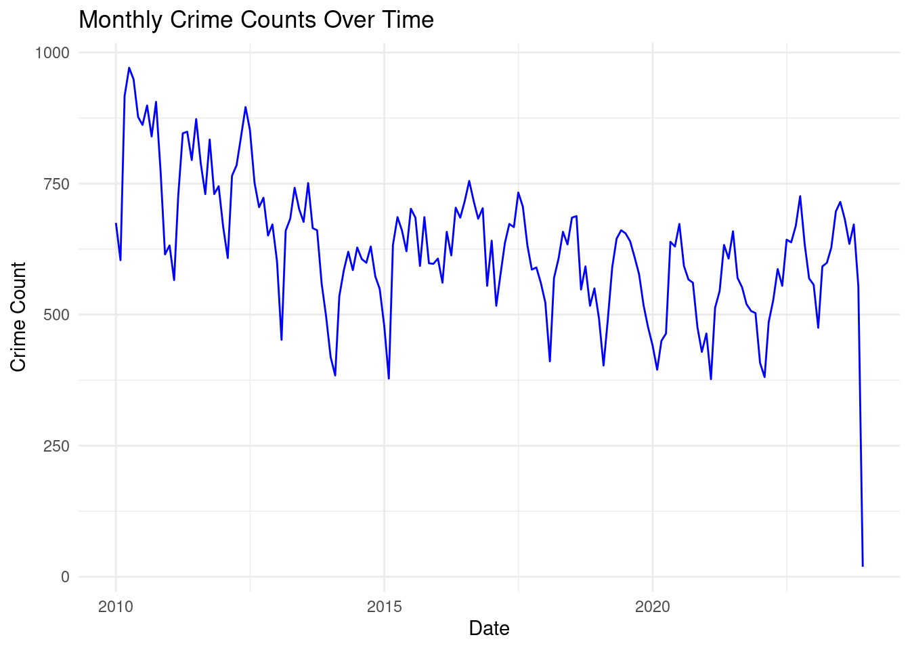
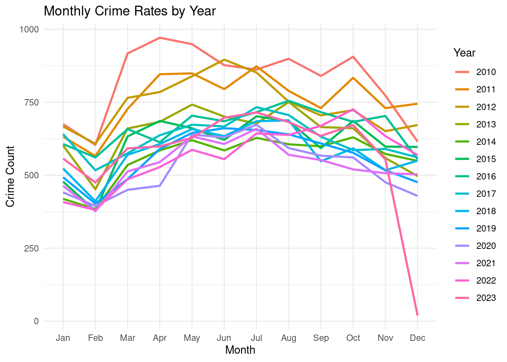
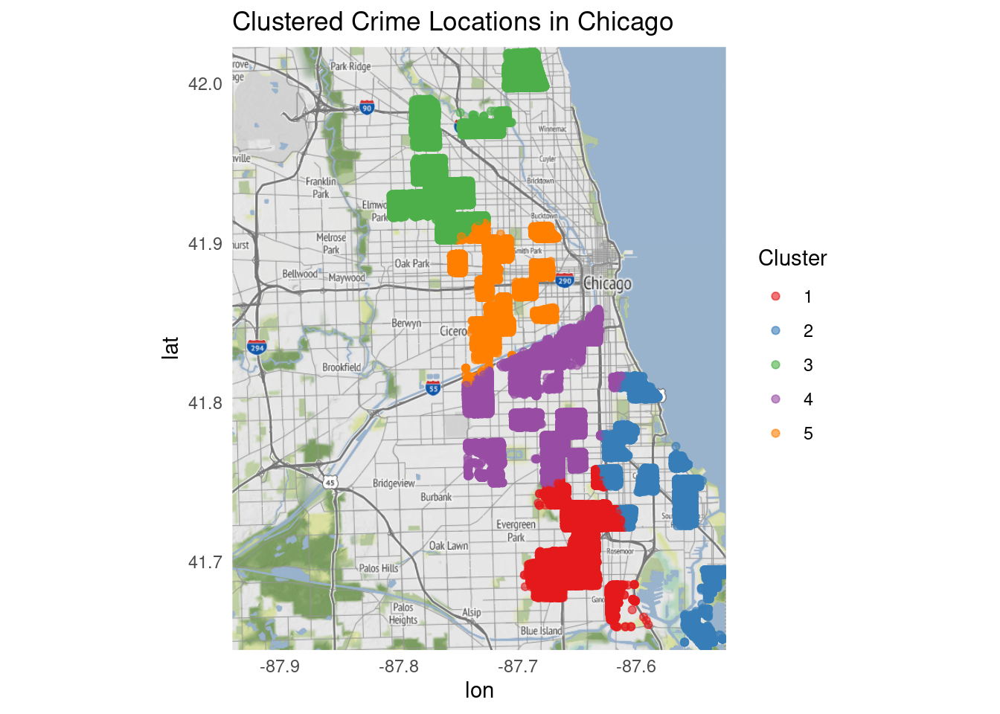

library(dplyr)
Attaching package: 'dplyr'The following objects are masked from 'package:stats':
filter, lagThe following objects are masked from 'package:base':
intersect, setdiff, setequal, unionlibrary(tidyr)This website presents a detailed analysis of crime trends and spatial distributions in Chicago from 2010 to 2023.
Data Cleaning and Preparation I am using the dplyr and tidyr packages in R Studio to clean and organize the dataset, removing any inconsistencies or missing values to ensure data accuracy.
Time-Series Analysis I am leveraging ggplot2 to plot trends in crime rates over time, analyzing how crime levels are evolving throughout the study period.
Spatial Analysis Using the sf package, I am mapping crime locations to visualize their spatial distribution across Chicago’s neighborhoods, helping to identify patterns and areas of concern.
Cluster Analysis I am applying clustering techniques to identify crime hotspots and determine whether certain crime types are showing spatial concentrations in specific regions of the city.
Predictive Modeling I am using machine learning techniques, such as caret and randomForest, to build models that predict crime occurrences based on time and location, providing insights for crime prevention strategies.
Required packages:
library(dplyr)
Attaching package: 'dplyr'The following objects are masked from 'package:stats':
filter, lagThe following objects are masked from 'package:base':
intersect, setdiff, setequal, unionlibrary(tidyr)df <- read.csv("data/data.csv", stringsAsFactors = FALSE)head(df) ID Case.Number Date Block IUCR
1 13190943 JG400635 08/28/2023 06:23:00 AM 027XX N NARRAGANSETT AVE 1320
2 13192516 JG402535 08/29/2023 01:59:00 PM 014XX N LOCKWOOD AVE 1310
3 13202216 JG414059 09/06/2023 06:20:00 PM 018XX N LUNA AVE 1310
4 13202922 JG414619 09/06/2023 06:00:00 PM 014XX E 49TH ST 1320
5 13201501 JG413395 09/06/2023 01:00:00 AM 082XX S AVALON AVE 1320
6 13202292 JG412948 09/06/2023 12:40:00 AM 082XX S WOLCOTT AVE 1310
Primary.Type Description Location.Description Arrest
1 CRIMINAL DAMAGE TO VEHICLE PARKING LOT / GARAGE (NON RESIDENTIAL) true
2 CRIMINAL DAMAGE TO PROPERTY RESIDENCE true
3 CRIMINAL DAMAGE TO PROPERTY STREET false
4 CRIMINAL DAMAGE TO VEHICLE STREET false
5 CRIMINAL DAMAGE TO VEHICLE STREET false
6 CRIMINAL DAMAGE TO PROPERTY RESIDENCE false
Domestic Beat District Ward Community.Area FBI.Code X.Coordinate Y.Coordinate
1 false 2512 25 36 19 14 1133273 1917606
2 true 2532 25 37 25 14 1140764 1909050
3 false 2532 25 37 25 14 1139111 1911573
4 false 222 2 4 39 14 1186638 1872793
5 false 411 4 8 45 14 1185975 1850651
6 false 614 6 17 71 14 1165120 1850031
Year Updated.On Latitude Longitude Location
1 2023 09/14/2023 03:41:59 PM 41.93013 -87.78568 (41.9301323, -87.785676799)
2 2023 09/14/2023 03:41:59 PM 41.90652 -87.75836 (41.906519104, -87.758359629)
3 2023 09/14/2023 03:43:09 PM 41.91347 -87.76437 (41.913472752, -87.764370362)
4 2023 09/14/2023 03:43:09 PM 41.80606 -87.59100 (41.806060798, -87.590999348)
5 2023 09/14/2023 03:43:09 PM 41.74532 -87.59413 (41.745316916, -87.59412899)
6 2023 09/14/2023 03:43:09 PM 41.74408 -87.67056 (41.744081763, -87.670562675)df <- df %>% distinct()df <- df %>% drop_na()df <- df %>% mutate_if(is.character, tolower)df <- df %>%
mutate(across(where(is.character), ~ na_if(., "NA"))) %>%
mutate(across(where(is.character), ~na_if(., "unknown")))summary(df) ID Case.Number Date Block
Min. : 7296923 Length:105227 Length:105227 Length:105227
1st Qu.: 8854092 Class :character Class :character Class :character
Median :10538173 Mode :character Mode :character Mode :character
Mean :10410688
3rd Qu.:11946536
Max. :13597427
IUCR Primary.Type Description Location.Description
Min. : 142 Length:105227 Length:105227 Length:105227
1st Qu.:1310 Class :character Class :character Class :character
Median :1310 Mode :character Mode :character Mode :character
Mean :1317
3rd Qu.:1320
Max. :5004
Arrest Domestic Beat District
Length:105227 Length:105227 Min. : 222 Min. : 2.00
Class :character Class :character 1st Qu.: 634 1st Qu.: 6.00
Mode :character Mode :character Median :1014 Median :10.00
Mean :1235 Mean :12.13
3rd Qu.:2212 3rd Qu.:22.00
Max. :2534 Max. :31.00
Ward Community.Area FBI.Code X.Coordinate
Min. : 1.00 Min. : 2.00 Length:105227 Min. : 0
1st Qu.:12.00 1st Qu.:25.00 Class :character 1st Qu.:1150328
Median :21.00 Median :44.00 Mode :character Median :1163630
Mean :21.49 Mean :43.79 Mean :1163194
3rd Qu.:29.00 3rd Qu.:67.00 3rd Qu.:1174198
Max. :50.00 Max. :75.00 Max. :1205114
Y.Coordinate Year Updated.On Latitude
Min. : 0 Min. :2010 Length:105227 Min. :36.62
1st Qu.:1852587 1st Qu.:2012 Class :character 1st Qu.:41.75
Median :1871709 Median :2016 Mode :character Median :41.80
Mean :1877485 Mean :2016 Mean :41.82
3rd Qu.:1904122 3rd Qu.:2020 3rd Qu.:41.89
Max. :1950365 Max. :2023 Max. :42.02
Longitude Location
Min. :-91.69 Length:105227
1st Qu.:-87.72 Class :character
Median :-87.68 Mode :character
Mean :-87.68
3rd Qu.:-87.64
Max. :-87.52 The below bar plot presents an analysis of the distribution of different types of crimes in the dataset. The aim is to visualize the frequency of each crime type to identify trends and understand which types of crimes are most prevalent.
library(ggplot2)
# Create a histogram of the Year column
ggplot(df, aes(x = Year)) +
geom_histogram(binwidth = 1, fill = "beige", color = "black", alpha = 0.7) +
labs(title = "Distribution of Crimes by Year", x = "Year", y = "Frequency") +
theme_minimal()
# Load necessary libraries
library(ggplot2)
library(dplyr)
# Convert 'Date' column to Date type and extract month-year for aggregation
df$Date <- as.Date(df$Date, format="%m/%d/%Y %I:%M:%S %p")
df$Month <- format(df$Date, "%Y-%m")
# Aggregate crime counts by month
monthly_crime_counts <- df %>%
group_by(Month) %>%
summarise(Crime_Count = n())
monthly_crime_counts$Month <- as.Date(paste0(monthly_crime_counts$Month, "-01"))
# Plot the time-series data
ggplot(monthly_crime_counts, aes(x = as.Date(Month), y = Crime_Count)) +
geom_line(color = "blue") +
labs(title = "Monthly Crime Counts Over Time",
x = "Date",
y = "Crime Count") +
theme_minimal()
# Extract Year and Month separately
df$Year <- format(df$Date, "%Y")
df$Month <- format(df$Date, "%m")
# Aggregate data by Year and Month to calculate monthly crime rates per year
monthly_crime_rate <- df %>%
group_by(Year, Month) %>%
summarise(Crime_Count = n()) %>%
ungroup()`summarise()` has grouped output by 'Year'. You can override using the
`.groups` argument.# Convert Month to a factor to ensure correct ordering on the x-axis
monthly_crime_rate$Month <- factor(monthly_crime_rate$Month, levels = sprintf("%02d", 1:12), labels = month.abb)
# Plot multiple lines for each year
ggplot(monthly_crime_rate, aes(x = Month, y = Crime_Count, color = Year, group = Year)) +
geom_line(size = 1) +
labs(title = "Monthly Crime Rates by Year",
x = "Month",
y = "Crime Count") +
theme_minimal() +
theme(legend.position = "right")Warning: Using `size` aesthetic for lines was deprecated in ggplot2 3.4.0.
ℹ Please use `linewidth` instead.
head(df) ID Case.Number Date Block IUCR Primary.Type
1 13190943 jg400635 2023-08-28 027xx n narragansett ave 1320 criminal damage
2 13192516 jg402535 2023-08-29 014xx n lockwood ave 1310 criminal damage
3 13202216 jg414059 2023-09-06 018xx n luna ave 1310 criminal damage
4 13202922 jg414619 2023-09-06 014xx e 49th st 1320 criminal damage
5 13201501 jg413395 2023-09-06 082xx s avalon ave 1320 criminal damage
6 13202292 jg412948 2023-09-06 082xx s wolcott ave 1310 criminal damage
Description Location.Description Arrest Domestic Beat
1 to vehicle parking lot / garage (non residential) true false 2512
2 to property residence true true 2532
3 to property street false false 2532
4 to vehicle street false false 222
5 to vehicle street false false 411
6 to property residence false false 614
District Ward Community.Area FBI.Code X.Coordinate Y.Coordinate Year
1 25 36 19 14 1133273 1917606 2023
2 25 37 25 14 1140764 1909050 2023
3 25 37 25 14 1139111 1911573 2023
4 2 4 39 14 1186638 1872793 2023
5 4 8 45 14 1185975 1850651 2023
6 6 17 71 14 1165120 1850031 2023
Updated.On Latitude Longitude Location Month
1 09/14/2023 03:41:59 pm 41.93013 -87.78568 (41.9301323, -87.785676799) 08
2 09/14/2023 03:41:59 pm 41.90652 -87.75836 (41.906519104, -87.758359629) 08
3 09/14/2023 03:43:09 pm 41.91347 -87.76437 (41.913472752, -87.764370362) 09
4 09/14/2023 03:43:09 pm 41.80606 -87.59100 (41.806060798, -87.590999348) 09
5 09/14/2023 03:43:09 pm 41.74532 -87.59413 (41.745316916, -87.59412899) 09
6 09/14/2023 03:43:09 pm 41.74408 -87.67056 (41.744081763, -87.670562675) 09# Load necessary libraries
install.packages(c("ggplot2", "ggmap", "sf"))# Downloading packages -------------------------------------------------------
- Downloading ggmap from CRAN ... OK [4.5 Mb in 0.38s]
- Downloading plyr from CRAN ... OK [768 Kb in 0.36s]
- Downloading jpeg from CRAN ... OK [28.6 Kb in 0.36s]
- Downloading bitops from CRAN ... OK [25.4 Kb in 0.35s]
- Downloading sf from CRAN ... OK [3.6 Mb in 0.37s]
- Downloading classInt from CRAN ... OK [487.3 Kb in 0.36s]
- Downloading e1071 from CRAN ... OK [582.2 Kb in 0.38s]
- Downloading proxy from CRAN ... OK [171.5 Kb in 0.38s]
- Downloading s2 from CRAN ... OK [2.1 Mb in 0.37s]
- Downloading wk from CRAN ... OK [1.7 Mb in 0.39s]
- Downloading units from CRAN ... OK [354.5 Kb in 0.36s]
Successfully downloaded 11 packages in 6.7 seconds.
The following package(s) will be installed:
- bitops [1.0-9]
- classInt [0.4-10]
- e1071 [1.7-16]
- ggmap [4.0.0]
- ggplot2 [3.5.1]
- jpeg [0.1-10]
- plyr [1.8.9]
- proxy [0.4-27]
- s2 [1.1.7]
- sf [1.0-19]
- units [0.8-5]
- wk [0.9.4]
These packages will be installed into "~/work/final-project-bsatyavs/final-project-bsatyavs/renv/library/linux-ubuntu-jammy/R-4.4/x86_64-pc-linux-gnu".
# Installing packages --------------------------------------------------------
- Installing ggplot2 ... OK [linked from cache]
- Installing plyr ... OK [installed binary and cached in 0.28s]
- Installing jpeg ... OK [installed binary and cached in 0.2s]
- Installing bitops ... OK [installed binary and cached in 0.21s]
- Installing ggmap ... OK [installed binary and cached in 0.81s]
- Installing proxy ... OK [installed binary and cached in 0.21s]
- Installing e1071 ... OK [installed binary and cached in 0.22s]
- Installing classInt ... OK [installed binary and cached in 0.23s]
- Installing wk ... OK [installed binary and cached in 0.25s]
- Installing s2 ... OK [installed binary and cached in 0.35s]
- Installing units ... OK [installed binary and cached in 0.32s]
- Installing sf ... OK [installed binary and cached in 0.8s]
Successfully installed 12 packages in 4.3 seconds.library(sf)Linking to GEOS 3.10.2, GDAL 3.4.1, PROJ 8.2.1; sf_use_s2() is TRUElibrary(ggplot2)
library(ggmap)ℹ Google's Terms of Service: <https://mapsplatform.google.com>
Stadia Maps' Terms of Service: <https://stadiamaps.com/terms-of-service/>
OpenStreetMap's Tile Usage Policy: <https://operations.osmfoundation.org/policies/tiles/>
ℹ Please cite ggmap if you use it! Use `citation("ggmap")` for details.library(ggmap)
register_stadiamaps(key = "646b60c3-8bef-49e4-bc52-805e18cdae42")
# Convert the data to an sf object with crime location coordinates
crime_data_sf <- st_as_sf(df, coords = c("Longitude", "Latitude"), crs = 4326, agr = "constant")
# Get a basemap of Chicago using ggmap
# Ensure you have the ggmap API key for Google Maps if you choose source = "google"
chicago_map <- get_stadiamap(
bbox = c(left = -87.9401, bottom = 41.6445, right = -87.5237, top = 42.0230),
zoom = 11,
maptype = "stamen_terrain"
)ℹ © Stadia Maps © Stamen Design © OpenMapTiles © OpenStreetMap contributors.# Plot crime locations on the map of Chicago
ggmap(chicago_map) +
geom_sf(data = crime_data_sf, inherit.aes = FALSE, color = "red", size = 0.5, alpha = 0.7) +
labs(title = "Crime Distribution Across Chicago") +
theme_minimal()Coordinate system already present. Adding new coordinate system, which will
replace the existing one.
# Load necessary libraries
library(dplyr)
library(ggplot2)
library(ggmap)
# Assuming your data is already loaded into crime_data
# Filter to only rows with valid latitude and longitude
crime_data <- df %>%
filter(!is.na(Latitude) & !is.na(Longitude))
# Step 1: Extract only latitude and longitude for clustering
coords <- crime_data %>%
select(Latitude, Longitude)
# Step 2: Perform K-means clustering (choose k as desired)
set.seed(123) # Set seed for reproducibility
k <- 5 # Number of clusters (adjust as needed)
crime_clusters <- kmeans(coords, centers = k, nstart = 20)
# Add the cluster assignments back to the original data
crime_data$Cluster <- factor(crime_clusters$cluster)
# Step 3: Get a Stadia map of Chicago
chicago_map <- get_stadiamap(bbox = c(left = -87.9401, bottom = 41.6445, right = -87.5245, top = 42.0230),
zoom = 11, maptype = "stamen_terrain")ℹ © Stadia Maps © Stamen Design © OpenMapTiles © OpenStreetMap contributors.# Step 4: Plot clusters on the map
ggmap(chicago_map) +
geom_point(data = crime_data, aes(x = Longitude, y = Latitude, color = Cluster),
size = 1.5, alpha = 0.6) +
scale_color_brewer(palette = "Set1") +
labs(title = "Clustered Crime Locations in Chicago", color = "Cluster") +
theme_minimal()Warning: Removed 1 row containing missing values or values outside the scale range
(`geom_point()`).
The K-means clustering method was used to group crime incidents based on their locations (latitude and longitude). This method divides the data into a set number of clusters (5 clusters in this case). It works by reducing the distance between each crime location and the center of its group, known as the cluster centroid.
The number of clusters (k) was chosen after looking at the data and deciding what made the most sense. Although more clusters might give more detailed information, 5 clusters were chosen to keep it simple and easy to understand.
Areas with more people living in them tend to have more crimes because there are more opportunities for crimes to happen. Clusters near busy places like shopping malls or entertainment areas may have higher crime rates due to the large number of people walking around.
Areas that have poor infrastructure, such as streets without enough lighting or security, might see more crime. The clustering method helps to show these areas clearly.
Police can use these results to focus on high-crime areas, assign officers there, start neighborhood watch programs, or create plans to tackle specific types of crime in each area. City planners can also use this information to improve lighting, safety, and community involvement in areas with more crime.
The histogram of crime distribution by year highlights trends in criminal activity, aiding law enforcement in resource allocation and community safety initiatives. It underscores the influence of external factors on crime fluctuations and sets the stage for further research into specific crime types and their underlying causes.
The further project work includes the time series analysis, spatial analysis, cluster analysis, and prediction analysis.